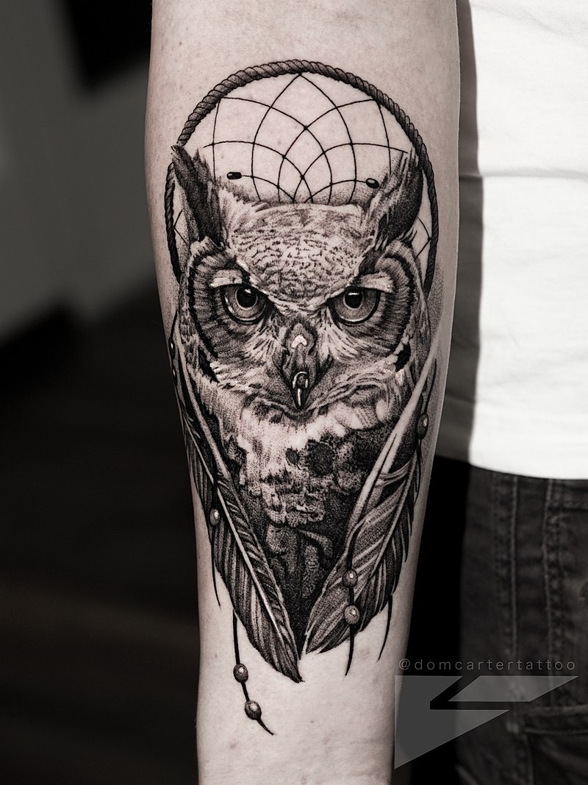
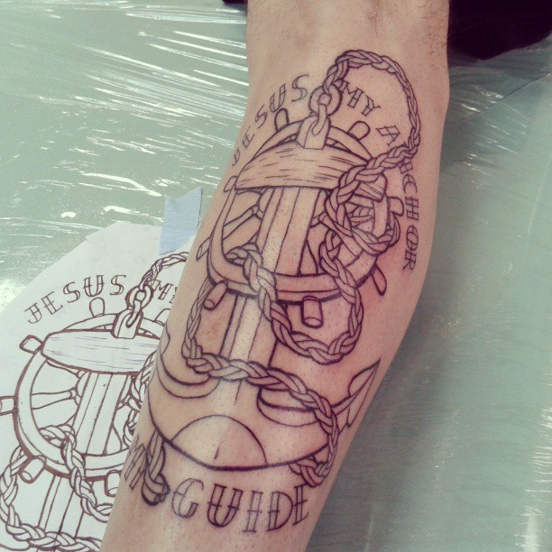
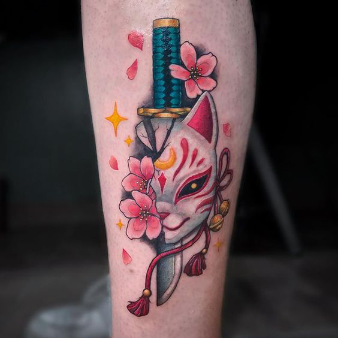
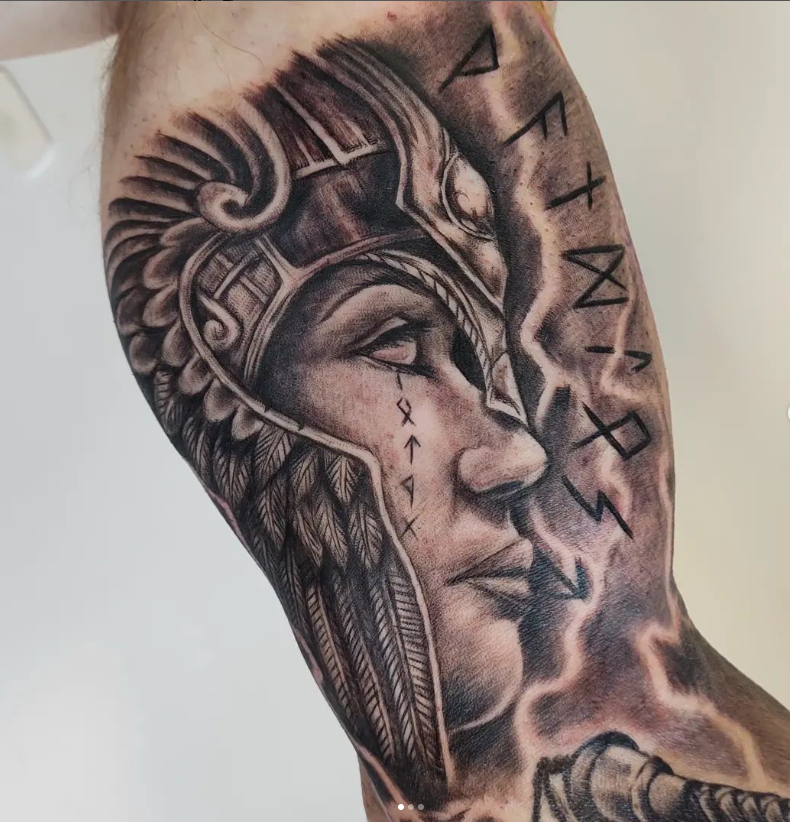

Nuevos Diseños
Tatuajes de estilo realista, fantasticos, animales simbolos tenes mucho por conocer
Tipicos
Podras encontrar los tatuaje de tus dibujos preferidos o las frases mas dichas
Exoticos
Un ejemplo de un diseño de tatuaje de Los mejores tatuarores que tenemos para vos
Tematicos
Descubre los nuevos bocetos.